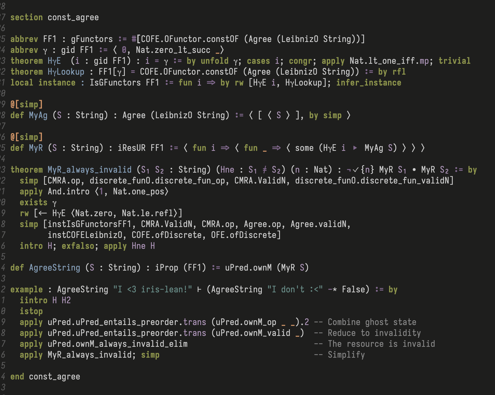

Just a quick update for this one. Since my last post on Eileen, work has restarted on the main Iris-Lean project, and I’ve been contributing there instead. It’s always a shame to see a good name go to waste, but I’m more than happy to give it up in exchange for a realistic shot at finishing the project.
Since the switch we’ve managed to finish a definition for
iProp, and even get an example Iris proof working!

Looks like everyone loves Iris-Lean ;)
We are coordinating on the #iris-lean channel in the
Lean
Zulip. New contributors are always welcome (for example Suhr,
who took a heroic chunk out of the CMRA lemmas). If you message in
the Zulip, I’m sure I’ll be able to find you something to do!